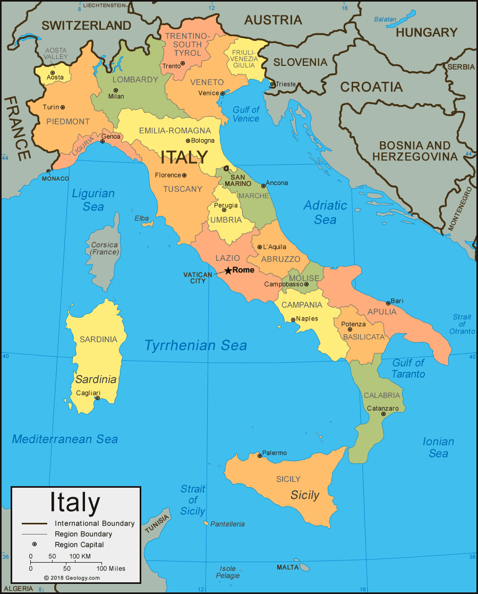
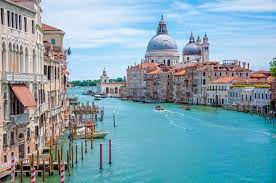
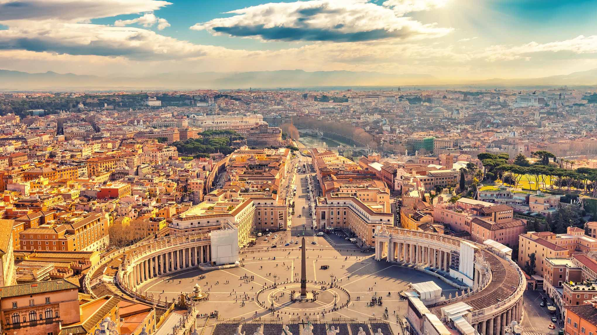

Italy
About
Italy is located in southern Europe, on a peninsula. The country is in the shape of a boot making it easy to recognize from a map. Italy is surrounded on three sides by the Mediterranean Sea and borders many countries, the most notable being France, Austria, Switzerland, Greece and Spain. The country is famous for nearly 3000 years of history dating back to 753 BC. Italy was the center of the cultural revolution known as the Renaissance during the 15th century. Now Italy is known for foods such as pizza and pasta, as well as expensive sports cars like Ferrari's and Lamborghini. The country is widely known for art where artists like Da Vinci, and Michelangelo were from. On top of that, the country is known for its Roman architecture and their vast majority of landscapes.
Locations
Venice
Venice is a city located in the middle of a lagoon in northeast Italy. Venice was established in 421 making it over 1,200 years old. Venice became a part of Italy in 1966 where before it was its own independent republic. Venice is an urbanized city that is built on a collection of small islands, 116 islands to be exact. Most of the buildings in Venice are at least a couple of centuries old. Since the city is a bunch of islands connected, a method of transportation that they are known for is boats down canals. In total there are 182 canals and 435 bridges across those canals. Venice is also known for their churches where there are 139 of them. One of the most popular tourist attractions in Venice is St. Mark's Basilica (pictured below) which is Venice's most famous church. Another popular location is St. Mark's square which is a big open area surrounded on three sides by some of the best architecture in the city and is where the Basilica is located.
Rome
Rome is a city located on the western cost of Italy on the Tiber River. Rome was founded in 753 B.C making it over 2,500 years old. The first 1000 years of existence was the Roman Empire period which is a bit too much to cover here. Rome became part of Italy in 1870 where it was chosen to be the capital. The city of Rome is full of amazing architecture from the 4th century and earlier which is how why the buildings there are designed the way they are. One of the most well-known places in Rome is the Roman Colosseum (pictured below) which is a large amphitheater that held 65,000 people in the days of the Roman Empire. This is where spectators watched gladiators battle each other and wild animals to the death.